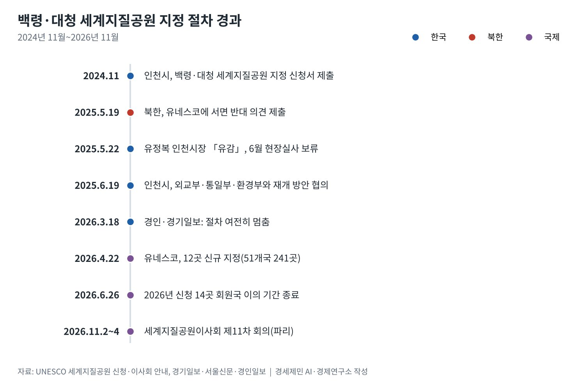
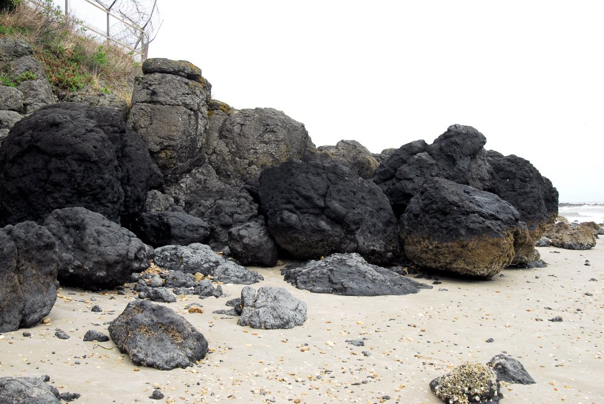
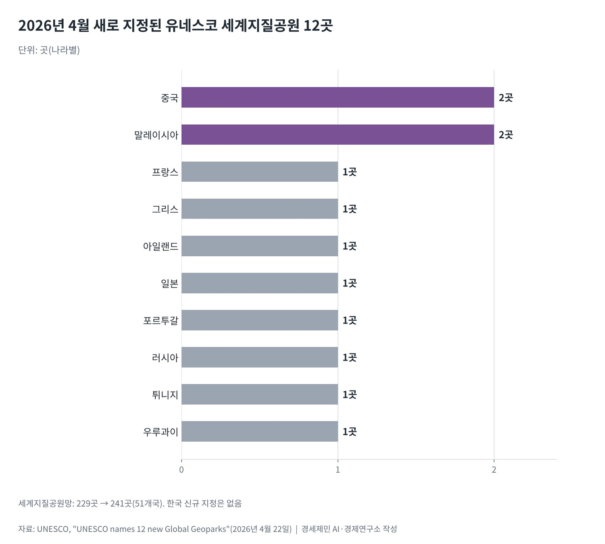

[서해 현안] 북한 이의제기로 멈춘 백령·대청 세계지질공원 지정
2024년 11월 신청, 2025년 5월 북한 서면 이의로 과학 평가와 현장실사 멈춰
유네스코는 2026년 4월 12곳 새로 지정, 세계지질공원은 51개국 241곳
11월 2~4일 파리 이사회 앞두고도 백령·대청 절차 재개 발표는 없어
AI경제저널=김갑봉 기자 | 인천시가 추진한 백령·대청 유네스코 세계지질공원 지정이 멈춘 지 1년 5개월이 지났다. 북한이 2025년 5월 19일 서면 반대 의견을 낸 뒤 절차는 과학 평가로 넘어가지 못했다. 10월 21일까지 재개 발표는 찾지 못했다.
그사이 세계지질공원 지도는 넓어졌다. 유네스코는 2026년 4월 22일 12곳을 새로 지정했다. 망은 51개국 241곳이 됐다. 지방정부가 준비한 신청이 남북 관계의 벽에 막힌 과정을 유네스코 원문과 보도로 정리한다.
신청에서 중단까지
인천시는 2024년 11월 유네스코에 백령·대청 세계지질공원 지정 신청서를 냈다. 유네스코는 신청지의 지질·지리 요약을 회원국에 공개하고 3개월 동안 서면 이의를 받는다.
운영지침 5.4(iv)조는 회원국의 서면 이의가 들어오면 후보지가 과학 평가로 넘어가지 않는다고 정했다. 해결은 「관련 회원국들」의 몫이다. 경기일보에 따르면 6월로 잡혔던 유네스코 현장실사도 보류됐다.
유정복 인천시장은 2025년 5월 22일 북한의 반대에 유감을 밝히고 이의 사유를 밝히라고 요구했다. 서울신문은 6월 19일 인천시가 외교부·통일부·환경부와 협의해 외교 경로로 재개 방안을 마련하고 있다고 전했다.

지방정부가 외교 앞에 서다
신청은 지역이 준비하지만 이의는 국가가 낸다. 이의를 푸는 일도 국가 사이의 문제다. 인천시는 지질공원 기반시설과 시민 참여 사업을 이어 가며 절차가 재개되면 바로 대응하겠다고 밝혔다.
2026년 3월 18일 경인일보와 경기일보는 대청도 현장을 다루며 절차가 여전히 멈춰 있다고 전했다. 이날 대청도를 찾은 박찬대 국회의원은 남북이 협조할 평화적 분위기가 필요하다고 했다. 재신청이 확정됐다는 내용은 없었다.
지방정부의 사업이 국가 간 이의로 멈추면 지방정부가 쓸 수단은 거의 없다. 인천시가 할 수 있는 일은 준비를 유지하고 중앙정부에 외교적 해결을 요청하는 데 그친다.

241곳으로 넓어진 세계지질공원 지도
유네스코 세계지질공원이사회는 2025년 9월 5~6일 칠레 퀴트랄쿠라 세계지질공원에서 제10차 회의를 열고 신규 12곳을 권고했다. 유네스코는 2026년 4월 22일 이를 확정해 망이 229곳에서 241곳으로 늘었다.
새 지질공원은 중국 창산·쓰구냥산, 말레이시아 렝공·사라왁 델타가 두 곳씩이다. 일본 미네·아키요시다이 카르스트 대지, 프랑스, 그리스, 아일랜드, 포르투갈, 러시아, 튀니지, 우루과이가 한 곳씩 얻었다.
같은 회의는 재인증 대상 44곳 가운데 38곳에 녹색카드를 줘 4년을 연장했다. 6곳은 노란카드로 2년 연장에 그쳤다. 세계지질공원은 한 번 지정으로 끝나지 않고 4년마다 다시 평가받는다.

재개의 조건
2026년 신규 신청은 14곳이 유네스코의 공식 평가 절차에 들어갔다. 이 신청들에 대한 회원국 이의 기간은 6월 26일 끝났다. 세계지질공원이사회 제11차 회의는 11월 2~4일 파리 유네스코 본부에서 열린다.
이사회는 신청을 받아들이거나, 거부하거나, 최대 2년 미룰 수 있다. 그러나 이의로 멈춘 후보지는 이 판단의 대상에 오르지 못한다. 백령·대청 절차를 다시 움직이려면 이의가 철회되거나 당사국 사이에 해결책이 나와야 한다.
북한은 2026년 3월 새 헌법에 영토 조항을 넣었다. 38노스는 2월 당대회 총화가 한국을 매우 적대적인 국가로 규정했다고 전했다. 북한이 이의를 거둘 신호는 보이지 않는다. 유네스코가 이의 절차를 바꿀지도 공개된 논의가 없다.
정부가 쓸 길은 두 갈래다. 남북 접촉 창구를 여는 노력을 잇고, 이의 절차가 분쟁 지역의 신청을 기한 없이 묶는 문제를 유네스코에 제기하는 일이다. 백령·대청의 기다림은 서해의 선이 얼마나 넓은 영역을 붙잡고 있는지 보여 준다.
참고문헌
기관 자료
- UNESCO, "UNESCO names 12 new Global Geoparks", 2026년 4월 22일. https://www.unesco.org/en/articles/unesco-names-12-new-global-geoparks
- UNESCO, "UNESCO Global Geoparks Council proposes 12 new geoparks for endorsement", 2025년 9월 8일. https://www.unesco.org/en/articles/unesco-global-geoparks-council-proposes-12-new-geoparks-endorsement
- UNESCO, "UNESCO Global Geoparks Council". https://www.unesco.org/en/iggp/geoparks/council
- UNESCO, "UNESCO Global Geoparks applications". https://www.unesco.org/en/iggp/geoparks/applications
- UNESCO, 「Statutes of the International Geoscience and Geoparks Programme; Operational Guidelines for UNESCO Global Geoparks」(5.4(iv)조·5.5조), 노르웨이 순호르들란 세계지질공원 게재본. https://www.geoparksunnhordland.no/wp-content/uploads/2024/12/UGGP-Statutes-and-guidelines.pdf
언론 보도
- 노재영, 「유정복 "북한의 백령·대청 유네스코 지정 반대 유감"…"북한, 이의신청 제기 이유 밝혀야"」, 경기일보, 2025년 5월 22일. https://kyeonggi.com/article/20250522580314
- 강남주, 「'北 반대' 백령·대청 세계지질공원…인천시, 외교 채널 통해 대응」, 서울신문, 2025년 6월 19일. https://m.go.seoul.co.kr/news/2025/06/19/20250619500209
- 김희연, 「대청도 찾은 박찬대, 유네스코 세계지질공원 지정 노력 등 '평화 공약' 구상 언급」, 경인일보, 2026년 3월 18일. https://www.kyeongin.com/article/1760439
- 박귀빈, 「인천 백령 세계지질공원 등재 재추진 시급」, 경기일보, 2026년 3월 18일. https://www.kyeonggi.com/article/20260318580373
- Faith Katunga, "UNESCO Adds 12 New Global Geoparks For Travelers To Visit In 2026", Travel Noire(야후 트래블 게재), 2026년 5월 15일. https://travel.yahoo.com/guides/articles/unesco-adds-12-global-geoparks-175050511.html
- 38 North, "Paving the Way for Hostile Coexistence? What North Korea's Constitutional Revisions Mean for Inter-Korean Ties", 2026년 5월. https://www.38north.org/2026/05/paving-the-way-for-hostile-coexistence-what-north-koreas-constitutional-revisions-mean-for-inter-korean-ties/
- 홍승욱, 「북, '영토조항 신설'·'통일삭제' 개헌 단행」, 자유아시아방송, 2026년 5월 6일. https://www.rfa.org/korean/in-focus/2026/05/06/north-korea-territory-unification-removed/
[사진 출처]
- [사진1] Korea Heritage Service, "백령도진촌리의감람암포획현무암분포지 (2).jpg", 위키미디어 공용, 공공누리 제1유형. https://commons.wikimedia.org/wiki/File:백령도진촌리의감람암포획현무암분포지_(2).jpg
※ 이 기사는 AI 프로그램 클로드를 활용해 작성했습니다.
관련기사
- [서해 현안] 중국 서해 구조물 설치, 국제법 위반 소지와 외교 대응
- [서해 현안] 북한, 유네스코를 이용해 백령·대청까지 NLL 분쟁 확산 노림수
- [동맹과 국방] 군사력 세계 5위 한국, 자주국방은 어디까지 왔고 동맹은 무엇을 요구하나
- [동맹과 국방] 전작권 전환, 한국은 '2028년' 미국은 '2029년 1분기'…12월 안보협의회의가 가른다
저작권자 © AI경제저널 무단전재 및 재배포, AI학습 및 활용 금지